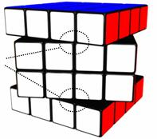
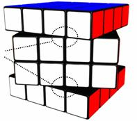
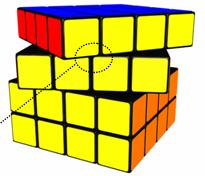

| 1a) | A competition must have independent judges, score takers and scramblers for each event of the competition. |
| 1b) | Each event must have a main judge who is responsible for following the regulations and making decisions in case of doubt. |
| 1c) | Judges must follow the procedures and if the procedure is not followed correctly by the competitor, or in special cases (like puzzle defects, incomplete solves, equipment failure), the main judge decides about the outcome, based on the regulations. |
| 1d) | The main judge for an event must be independent and must not compete in the event. |
| 1e) | Scramblers and judges may compete in rounds of an event. But in the rounds that they are both competing and scrambling/judging they must compete before all other competitors, with the scrambling and judging done by persons not competing in the round of the event. |
| 1f) | The main judge may decide to start a round later than scheduled, but only earlier than scheduled with a clear announcement to all competitors. |
| 1g) | The main judge may award a competitor another attempt due to interference or distraction or facility distractions (such as power failure, emergency alarm) or problems with the judging. |
| 1h) | The WCA delegate(s) attending official competitions may be an official, a competitor or both, following the normal regulations. |
| 2a) | Any person may be a competitor during a competition, if he:
- accepts the WCA regulations;
- accepts additional regulations of the competition;
- meets the competition requirements, which must be clearly announced before the competition.
|
| 2b) | Competitors younger than 18 must first ask their parent(s)/guardian(s) for permission. |
| 2c) | Registrants must provide all required information for their registration to be considered complete. |
| 2d) | All information must be used for the competition only, and may only be given to other organisations/persons after permission from the competitor. |
| 2e) | Competitors must be able to show a passport/id-card during registration at the location to prove their identity.
- 2e1) Competitors may represent the country that they have the nationality of.
- 2e2) Competitors with more than one nationality may change representing a country in their first competition of a calendar year.
|
| 2f) | Competitors must obey venue regulations and conduct themselves in a manner considerate of others at all times during the competition and while at the competition venue. |
| 2g) | Competitors must remain quiet when inside the designated competition area. Talking is permitted, but must be kept at a reasonable level, and away from those competing. |
| 2h) | Competitors must be fully dressed. Competitors may dress in jeans, pants, shorts, slacks, skirts, foot-wear, T-shirts or dress shirts. Hats may be worn. Clothes must not display vulgar language or have inappropriate pictures. |
| 2i) | While competing competitors must not use sound or other electronic equipment (like walkmans, dictaphones or additional lighting). |
| 2j) | Disqualification of a competitor may be enforced by the main judge for the following reasons:
- 2j1) competitor fails to show up in time for registration for the competition;
- 2j2) competitor fails to show up in time for the event;
- 2j3) competitor fails to show up in time for a round of an event;
- 2j4) competitor is suspect of cheating or defrauding the judges during the competition;
- 2j5) competitor is unruly, disrespectful of other's personal space, or conducting in a way that is unlawful or indecent or for damage to the venue facilities or anyone's personal property within the venue;
- 2j6) competitor interferes or becomes a blatant distraction to others during the competition;
- 2j7) competitor refuses to abide by any of the WCA regulations during the competition.
|
| 2k) | The main judge must govern and determine grounds for a disqualification, at his sole discretion, after citing grounds for disqualification to a competitor. |
| 2l) | Disqualification occurs immediately or after warning based on the nature of the infraction. |
| 2m) | Competitors are not eligible for any refund of any expenses they incurred to be part of the competition as a result of disqualification. |
| 2n) | Competitors may dispute a ruling in verbal form to the main judge. |
| 2o) | Disputes are only possible during the competition, within 30 minutes after the disputed incident happened, and before the next round of the event has started. |
| 2p) | The dispute must be handled by the main judge before the next round of the event has started. |
| 2q) | Disputes are only possible within the parameters of a main judge's discretion. No disputes are possible regarding the WCA regulations. |
| 2r) | The competitor must accept the final ruling of the main judge. Penalty: disqualification of the competitor. |
| 3a) | Competitors must bring and use their own puzzles. Competitors may borrow puzzles from other competitors, although both competitors must be ready to compete when they are called for to do so. |
| 3b) | Puzzles must be in reasonable working order, so that normal scrambling is possible. |
| 3c) | Competitors must use any normal 6 colour scheme for cube puzzles, as long as the puzzles show 1 colour per face in solved state. For other puzzles competitors must use any generally available variation that has the same moves, positions and solutions as the original puzzle. |
| 3d) | The colours of puzzles must be solid, the same per colour, and clearly distinct from other colours. |
| 3e) | Puzzles must either have coloured stickers or coloured tiles. |
| 3f) | Tiles or stickers must not be thicker than 1.5 mm, or the generally available thickness for non cube puzzles. |
| 3g) | Puzzles may be made smoother internally by sanding or using any lubricant. |
| 3h) | No modifications are allowed that enhance the basic concept of a puzzle. Some examples of enhancing the basic concept are: new moves are possible, normal moves are impossible, more colours/pieces are visible, moves are done automatically, more or other solved states. |
| 3i) | Any modifications to a puzzle that result in poor performance or results by a competitor are not grounds for additional chances to compete in any given round and turn. |
| 3j) | Puzzles must be clean and must not have any textures, markings, elevated pieces, damages, or other differences that distinguish one piece from a similar piece. |
| 3k) | Puzzles must be approved by a judge before the competitor competes. |
| 3l) | Cube puzzles must have at most one logo. For 3x3x3 Cube or bigger cube puzzles the logo must be placed on one of the center pieces. |
| 4a) | A scrambler must apply the scrambles. |
| 4b) | Puzzles must be scrambled using a computer-generated random scrambling algorithm. |
| 4c) | Standard metric for scrambling and solving is Half Turn Metric, where each move of 1 side counts as 1 move, and inner slice moves as 2 moves. |
| 4d) | Cube puzzles are generally scrambled with the white (or the lightest colour) face on top and green (or blue or the darkest face) on the front. |
| 4e) | Competitors must solve the same scrambles per round. |
| 4f) | At the main judge's discretion, scrambling algorithms in preliminary rounds may be randomly chosen from a pool of scrambles, for example to prevent cheating in large competitions. |
| 4g) | The number of moves to scramble a puzzle must be:
|
| 5a) | Puzzle defects are defects of puzzles, like: pieces popping, wires breaking, screws/caps/stickers falling off. |
| 5b) | If a puzzle defect occurs, the competitor may choose to repair the puzzle and continue the solve or choose to stop the solve. |
| 5b1) | If a competitor chooses to repair the puzzle, then he must only repair the defective pieces, and must not use pieces of other puzzles. |
| 5b2) | During the repairing of the puzzle, the competitor must not intentionally (courtesy of judge) make the position easier to solve than before the defect.
Penalty: disqualification of the solve. |
| 5b3) | If after repairing the puzzle, but still during the solve, the competitor notices that the puzzle is unsolvable, he may disassemble and assemble max. 3 pieces to make the puzzle solvable again. |
| 5b4) | For blindfolded events a puzzle defect may only be repaired during the solving, and must be done blindfolded. |
| 5b5) | If after the solve non functional parts of the puzzle are still defect (like a center cap of a cube) or not fully rotated (like a 5x5x5 center piece twisted in its spot), but the puzzle is otherwise unambiguously solved, the puzzle is considered solved, under discretion of the main judge. |
| 5c) | If a competitor has a puzzle defect, this does not give him the right to an extra attempt. |
| 7a) | Competitions may be held on any location, inside or outside, on special stages or normal floors. |
| 7b) | Audience should be at least 1.50 meter away from the competitors. |
| 7c) | Lighting of the competition area needs special attention, with preferably white light, so that competitors can easily distinguish the colours of puzzles. |
| 7d) | The temperature of the competition area should preferably be 21 to 25 degrees Celsius. |
| 7e) | The competition area must be smoke-free, and should have a reasonable noise level. |
| 7f) | The timer must be placed directly (no objects underneath it) on a table, desk or console that suits solving while standing. For Solving With Feet the timer must be placed directly on the floor. |
| 7g) | Competitors should preferably solve while standing, but solving while sitting is allowed although the height of the timer may be uncomfortable. |
| 8a) | Guidelines for a competition to become official according to the WCA:
- 8a1) The WCA board must approve the competition.
- 8a2) The full WCA regulations must be followed.
- 8a3) There must be a WCA delegate (appointed by WCA board) attending the competition.
- 8a4) WCA delegates must watch during the competition whether the full regulations were followed, and advise the organising team when needed.
- 8a5) WCA delegates must send a report to the WCA board within a week after the competition.
- 8a6) The competition must be clearly announced, and should be announced at least a month before the competition starts.
- 8a7) The competition must have at least 10 competitors.
- 8a8) The competition must be accessible for the public.
- 8a9) There must be an audience other than the competitors.
- 8a10) The StackMat timer must be used for time measurement.
- 8a11) WCA delegates must approve all events and formats of the competition before the competition starts.
|
| 8b) | An open competition is open to anyone. |
| 8c) | A closed competition may be open to:
- persons with a specific nationality
- citizens of specific geographical areas
- members of specific clubs
- students / employees of specific organisations.
No other distinctions are allowed to declare a competition closed.
|
| 8d) | Competitions may have time limits per round of an event, to make sure that the time schedule can be followed. |
| 8e) | If during a round a competitor does not solve within the time limit, then his solve may (courtesy of main judge) be stopped and disqualified by the judge. The main judge decides whether the competitor may continue the round, f.i. if the time was exceeded because of a puzzle defect. |
| 9a) |
Events must have one of the following formats:
- 'Best of'
Competitors get a limited number of attempts, with the best attempt counting. Example 'Best of 3'. There may be a combined time limit, example: 30 minutes for 'Best of 1' or 'Best of 2'.
- 'Average of 5'
Competitors get 5 attempts. Of these 5 attempts, the best and worst attempt are removed, with the average of the remaining 3 attempts counting.
- 'Mean of 3'
Competitors get 3 attempts, with the mean of the 3 attempts counting.
|
| 9b) | 'Best of' format may be used for any round for any event. |
| 9c) |
The preferred formats for final rounds are:
- Average of 5
2x2x2 Cube, 3x3x3 Cube, 4x4x4 Cube, 5x5x5 Cube, 3x3x3 Cube One-handed, Magic, Master Magic, Pyraminx
- Mean of 3
Clock, Square-1, Megaminx
- Best of
3x3x3 Cube Blindfolded, 4x4x4 Cube Blindfolded, 5x5x5 Cube Blindfolded, 3x3x3 Cube Fewest Moves, 3x3x3 Cube With Feet
|
| 9d) | For other events the format is decided by the organiser of the competition. Where applicable the preferred formats should be used as a guideline. |
| 9e) | WCA must provide WCA world rankings for single and preferred average formats where applicable. |
| 9f) | Results of official WCA competitions must be listed on the WCA world rankings, if the full WCA regulations were applied. |
| 9g) | Events must be held only once during a competition. |
| 9h) | If an event is held, then all competitors may participate in that event. |
| 9i) | All competitors must compete in each round during the same time frame. |
| 9j) | Events must have at most four rounds. |
| 9k) | Events with up to 100 competitors must have at most three rounds. |
| 9l) | Events with up to 16 competitors must have at most two rounds. |
| 9m) | For each round of an event, at least one competitor must not proceed to the next round. |
| 9n) | Events may have a B final, open to competitors who did not make it to the final. B finals may be limited to competitors who made it to the semi final. |
| 10a) | Before the competition all competitors must make themselves aware of the solved state per event. |
| 10b) | Only the resting state of a puzzle is considered, when the timer has stopped. |
| 10c) | Puzzles may be in any orientation at the end of the solve. |
| 10d) | All pieces of a puzzle must be fully attached to the puzzle, and in their required positions. See also article 5 Puzzle defects. |
| 10e) | Cube puzzles are solved when all sides are restored to solid colour states.
If one or more parallel slices need to be turned to reach the solved state then:
- 10e1) If all slices comply to regulation 10f, then the cube is considered solved, without a penalty.
- 10e2) If one or more adjacent slices do not comply to regulation 10f, then the cube is considered solved, with a penalty of 2 seconds.
In all other cases the solve is disqualified. |
| 10f) | A slice of a cube (and similar puzzles) may be misaligned in the following manner. The inner corner of the misaligned slice (or group) must not cross the inner edge of the connecting slices. For 2x2x2 Cube the slice must not be more than 1/8 turn away from solved state.

Examples no penalty:
    
Example penalty:

|
| 10g) | For Magic (and similar puzzles) the puzzle must be flat on the surface. The maximum elevation of any part of the puzzle at the end of a solve is two tiles higher than flat. |
| 10h) | Other puzzles are solved according to the solved state as defined in the generally accepted goal of the puzzle, with the regulations of the cube solved state applied when applicable. |
| 10i) | DNF (Did Not Finish) is the result if the solve was disqualified or unfinished. DNS (Did Not Start) is the result if a competitor skipped an attempt in a round. |